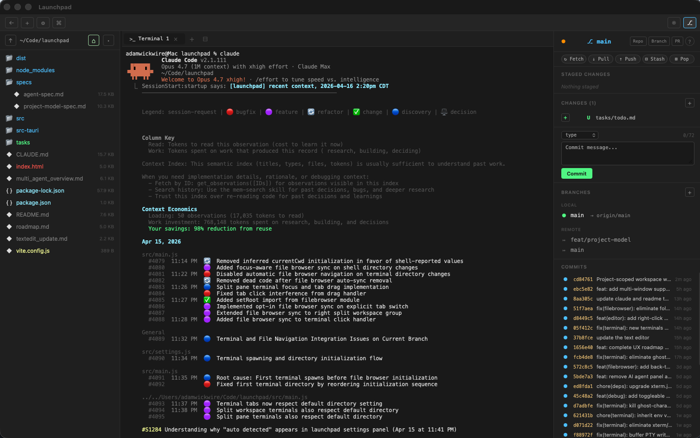

Your terminal,
with everything around it.
A native macOS workspace for running Claude Code, Aider, and other CLI coding agents. A real PTY terminal up front, with the visual tools you actually want around it — a file browser, a git panel, and a simple code editor.

Why I made it
I wasn't trying to reinvent anything. I just wanted a tool that fit how I actually code with CLI agents. Open a project, have a terminal ready, click around files without worrying about breaking the shell, commit stuff without remembering git flags. I told Claude I wanted a desktop app — it suggested Tauri + Rust + vanilla JS. I said sounds good, we'll figure it out. This is what we figured out.
// terminal
A real PTY with tabs, split panes, and a split workspace. Proper
signal handling, 256 colors, Unicode 11 widths, WebGL rendering.
Run claude, aider, or anything else you
normally run in a terminal.
// project-scoped
One window = one project. Every terminal spawns in the project
root. The file browser is root-locked. ⌘P stays inside
the project. Browse folders without accidentally sending a
cd to your agent.
// git panel
Stage, commit, push, pull, stash, merge, create branches — all from buttons. Structured diff preview. Conflict resolution with Ours / Theirs. Ahead / behind indicators. I don't want to remember git flags either.
// simple editor
CodeMirror 6 with syntax highlighting for the languages I actually use, find & replace, bracket matching, autocompletion, folding. Files open as tabs alongside your terminal tabs — one unified tab bar.
// file browser
A tree view rooted at the project. Color-coded by git status and file type. Right-click to create, rename, delete, reveal in Finder. A live filesystem watcher picks up terminal-side changes without a manual refresh.
// built for how I work
The terminal is the center. Everything else orbits it and stays out of the way unless you need it. No extension marketplace, no language servers chewing RAM, no dashboards I have to click past.
Install from source
Prerequisites: Rust and Node.js. macOS only for now.
git clone https://github.com/WalrusQuant/launchpad.git
cd launchpad
npm install
npx tauri build
cp -R src-tauri/target/release/bundle/macos/Launchpad.app /Applications/
See Getting started for a full walkthrough,
including npx tauri dev for a hot-reload dev build.
The shortcuts that matter
Everything is keyboard-first. Full list on the shortcuts page.
| ⌘P | Quick open file (fuzzy search across the project) |
| ⌘T / ⌘W | New terminal tab / close tab |
| ⌘D | Split terminal pane (two PTYs in one tab) |
| ⌘\ | Split workspace into left/right groups |
| ⌘G | Toggle git panel |
| ⌘⇧N | New window (opens a fresh project picker) |
| ⌘, | Settings |
Open source. MIT licensed.
Fork it, steal bits from it, file an issue, send a PR. It's all on GitHub.